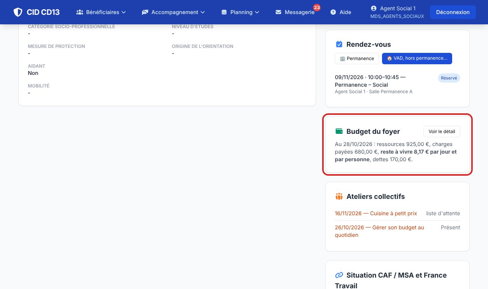
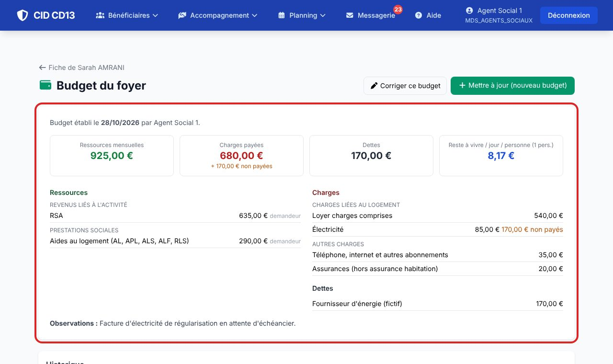
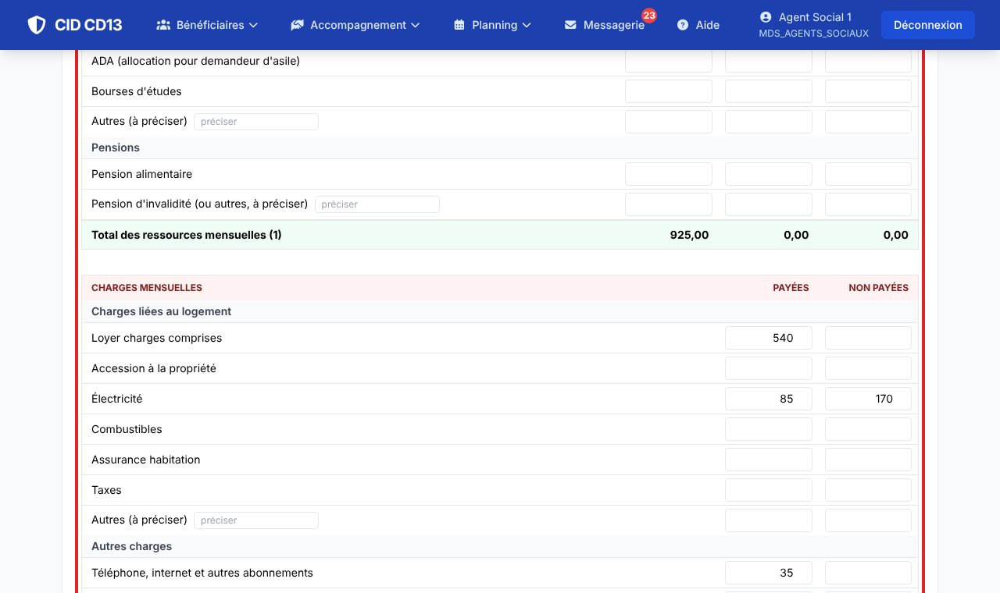
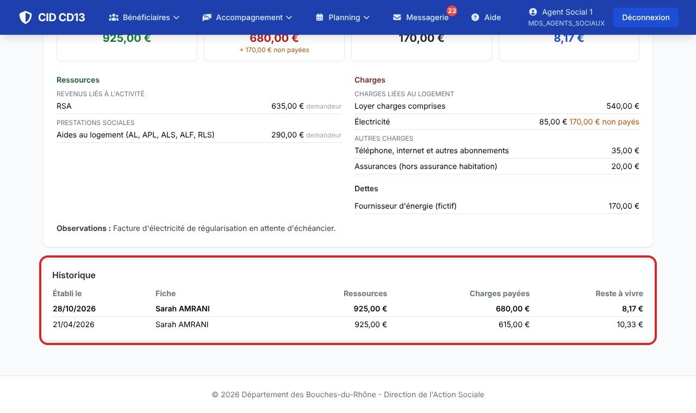

1Voir le budget en cours


- L'encart de la fiche résume le dernier budget : ressources, charges payées, reste à vivre par jour et par personne, dettes.
- Voir le détail : les rubriques, les charges non payées (en orange), les dettes et les observations.
2Établir ou mettre à jour


- Mettre à jour (nouveau budget) : la grille arrive pré-remplie avec le budget précédent ; corrigez ce qui a changé.
- Ressources par rubrique (demandeur, conjoint, autres), charges payées ou non payées, dettes, nombre de personnes au foyer.
- Chaque prestation a sa ligne : aides au logement, allocations familiales, complément familial, ASF, PAJE, PreParE, prime d'activité, AAH, AEEH, PCH, ADA, bourses. « Autres » sert seulement à ce qui n'a pas de ligne, en précisant.
- Le reste à vivre se calcule en direct : (ressources − charges payées) / personnes / 30.
Pas encore de budget du foyer ? La page propose de repartir du budget de la dernière demande d'AFASE.
3Retrouver l'historique

- Chaque mise à jour crée un nouveau budget daté : les anciens restent dans l'historique.
- Corriger ce budget sert seulement à rectifier une erreur de saisie.
Bon à savoir
- Une personne du même foyer (lien « vit au foyer ») sans budget à elle voit celui du foyer, avec la mention « même foyer ».
- Une nouvelle demande d'AFASE reprend le budget du foyer : vérifiez-le à l'étape Budget.
Et ensuite ?
Cliquez sur une image pour l'agrandir. Le cadre rouge montre où cliquer ou quoi remplir. Toutes les données affichées sont fictives.